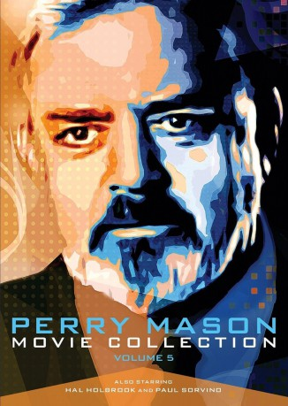

IMDB-Wertung: 6.9 / 10
IMDB-Wertung: 6.9 / 10  Metascore:
Metascore: 
Perry Mason verteidigt eine Radiomoderatorin, die den Chef ihres Senders ermordet haben soll. Er entdeckt, dass auch Kollegen von ihr einen guten Grund hatten, den skrupellosen Medienmann zu töten.
Alternativ: Perry Mason: The Case of the Telltale Talk Show Host
 IMDB-Wertung: 6.9 / 10 Metascore:
Perry Mason verteidigt eine Radiomoderatorin, die den Chef ihres Senders ermordet haben soll. Er entdeckt, dass auch Kollegen von ihr einen guten Grund hatten, den skrupellosen Medienmann zu töten.
Jahr: 1993
Dauer: 90 Minuten
FSK:
Land: USA Studio: NBCTonspuren: DD5.1 - ,
Untertitel:
Auflösung: 1080p (1424x1080) Größe: 3379 MB
Regisseur: Christian I. Nyby II
Drehbuch: Joyce Burditt
Soundtrack:
Darsteller:
 Regis Philbin als Winslow Keene
Regis Philbin als Winslow Keene Mariette Hartley als Dr. Sheila Carlin
Mariette Hartley als Dr. Sheila CarlinDatei: X:\Person\Perry Mason\Perry Mason und der Tote am Telefon (1993, FSK, 1424x1080).mkv seit 28.07.2017
Festplatte: HD Collection-7+mehr(A-Z)+Person
 Es gibt insgesamt 20 Filme in der Gruppe 'Person\Perry Mason'
Es gibt insgesamt 20 Filme in der Gruppe 'Person\Perry Mason'